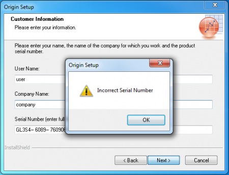

FAQ-1102 Ich sehe den Fehler "Incorrect Serial Number" ("Inkorrekte Seriennummer"), wenn ich Origin installiere. Was soll ich tun?
Incorrect-Serial-Number
Letztes Update: 24.05.2021
Wenn Sie die Fehlermeldung Incorrect Serial Number (Inkorrekte Seriennummer) sehen, wenn Sie Origin installieren:
|
Bitte überprüfen Sie zweimal, ob die Seriennummer, die Sie eingegeben haben, mit der übereinstimmt, die Sie von OriginLab erhalten haben. Die Seriennummer hat die Form XXXXX-XXXX-XXXXXXX
- Wir empfehlen immer, wenn möglich, die Seriennummer aus der E-Mail von OriginLab zu kopieren und Sie in den Installationsassistenten einzufügen.
- Wenn Sie die Seriennummer manuell eingeben müssen, stellen Sie sicher, dass alle Zeichen entsprechend der englischen Eingabemethode eingegeben wurden. Vergessen Sie nicht das Zeichen "-", das die Segmente verbindet.
Schlüsselwörter:installieren, ungültige SN, falsche SN